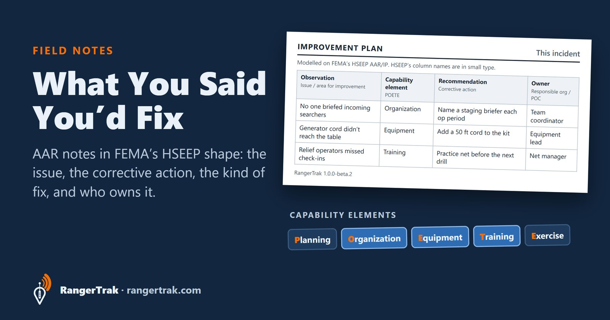

Field Notes
What You Said You’d Fix: AAR Notes in FEMA’s HSEEP Shape

RangerTrak is a free, open-source radio log and map for the scribe at a CERT, ACS/ARES, SAR or wildland-fire command post. Log who, where, when and what off the radio; it maps them. It works offline once set up, and prints the Form 309 Communications Log, ICS-213 and ICS-214. I built it. It’s AGPL and will stay free. Try it at rangertrak.org, no account or install needed, and take the tour to learn it.
Every drill ends with a hot wash, and every hot wash turns up the same kind of list. The generator cord didn’t reach the table. The relief operator had never run a net. A team went out without the latest clue. Someone writes it on the whiteboard, someone photographs the whiteboard, and next year’s drill finds the same three things.
Noticing usually isn’t the problem. The hard part is who owns each fix, and whether anyone checks that it happened.
FEMA’s name for checking
FEMA calls it improvement planning. It’s the last step of HSEEP, the Homeland Security Exercise and Evaluation Program, the doctrine most county and state exercises follow. An HSEEP after-action report ends with an improvement plan, and the pair is the AAR/IP. The improvement plan is a table: one row per issue, the corrective action, the kind of fix it is, who is responsible, and when it starts and finishes. The rows are tracked until they’re done, and the next exercise is a chance to test them.
The “kind of fix” column is the capability element, and HSEEP has five: Planning, Organization, Equipment, Training and Exercise, often shortened to POETE. It sounds bureaucratic, but it answers a useful question: is this a plan to rewrite, a role to assign, gear to buy, people to train, or something to practice again?
Where RangerTrak fits

Part 9 covered AAR notes. During the mission, the AAR/214 button at the top of every page catches a line in the moment, without leaving the radio log. At the debrief, the AAR notes page lets you give each note an area, a recommendation and an owner.
Beta 2 brings that page closer to HSEEP. Each note now has an optional Capability element, a pick-list of the five. Print turns this incident’s notes into an improvement plan modeled on HSEEP’s AAR/IP, with HSEEP’s column names in small type under ours:
- Observation is HSEEP’s issue or area for improvement.
- Recommendation is the corrective action.
- Owner is the primary responsible organization or point of contact.
![A printed RangerTrak improvement plan, 'Improvement plan modelled on FEMA's HSEEP AAR/IP', with three made-up notes. Columns: Observation (Issue / area for improvement), Area, Capability element (POETE), Recommendation (Corrective action), Owner (Primary responsible organization / POC) and Noted at. Rows: staging had no briefer, Organization, owner Team coordinator; the laptop ran on battery because the generator cord was short, Equipment, owner Equipment lead; relief operators missed check-ins, Training, owner Net manager. The footer names RangerTrak 1.0.0-beta.2.](img/hseep-improvement-plan.jpg)
The capability element is in the AAR spreadsheet export and the RangerTrak SitRep too. If your group doesn’t use HSEEP, leave it blank; nothing else changes.
Why a volunteer group would bother
When your CERT, ACS or SAR team takes part in a county exercise, your observations are one input to the exercise’s AAR/IP. Whoever writes it has to turn a dozen groups’ notes into rows. Rows that already say issue, corrective action, capability element and owner can go straight in. Nobody has to retype a photo of a whiteboard.
If your group runs its own drills, the same table is a fair improvement plan on its own. It is short enough to go through at the next meeting, and specific enough that “someone should” becomes a name.
A paper hot-wash sheet with the same four columns works too, and it’s still the backup when the laptop is dead. What RangerTrak adds is the notes you caught during the mission, already typed, with the time each was noticed.
What it leaves out, on purpose
It doesn’t track corrective actions to completion, and it isn’t going to. HSEEP’s template also has start and completion dates and a core capability column, and those aren’t here either. RangerTrak is the log for one mission. Following each fix through to done takes months of meetings, and it belongs wherever your group already keeps things between drills: a spreadsheet, the meeting minutes, the coordinator’s inbox. The export gets the rows there.
It doesn’t write the AAR/IP document either. That report belongs to whoever runs the exercise. What they need from your group is the rows, and the printout and the spreadsheet are the rows.
Try it in five minutes
- Open rangertrak.org in a spare browser profile, so nothing of yours is replaced, and use Load a demo on the Entry page.
- Press AAR/214 and add two AAR notes about the mission.
- On the AAR notes page, give one an area, a capability element, a recommendation and an owner.
- Press Print to see the improvement plan, and Export for the spreadsheet.
- For the guided version, take the tour: module 7, After the mission.
Tell me
- Does your group get asked for input to a county AAR/IP? In what form, and who asks?
- Where does your group keep its fix list between drills, and who checks it?
- Which capability element comes up most in your hot washes? My guess is Training, then Equipment.
Use the feedback form (start with “HSEEP”), Help → Contact us inside the app, reply on LinkedIn, or email RangerTrak [at] steadyeoc [dot] com.
Next in Field Notes: Field Phones, Up Close.